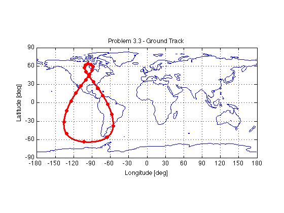

Contents
close all; clear all; clc;
4.5.a)
DU = 6378.137;
TU = 806.80415;
VU = DU/TU;
muearth = 398600.4418;
reearth = DU;
rotEarthRad = 0.0000729211585530;
rotEarthDay = 1.0027379093;
rotEarthDay = rotEarthRad*3600*24/(2*pi);
e2earth = 0.006694385000;
gst2012start = 6.6706801;
gst2012start = gst2012start * 2*pi/24;
track_lon = -(110 + 52/60 + 42/3600);
track_lat = 31 + 40/60 + 52/3600;
track_alt = 2.577;
track_UTC_offset = 7;
track_lon = track_lon *pi/180;
track_lat = track_lat *pi/180;
time_obs = UTC_time(9,4,2012,18,54,0,track_UTC_offset);
rho = 39899.01730557;
Az = 89.78381848 *pi/180;
El = 63.65779556 *pi/180;
rho_dot = 0.59337565;
Az_dot = -0.00630053 *pi/180;
El_dot = 0.00299054 *pi/180;
a_R_s__sez = [-rho*cos(Az)*cos(El);
rho*sin(Az)*cos(El);
rho*sin(El)];
sez_V_s__sez = ...
[-rho_dot*cos(Az)*cos(El) + rho*sin(Az)*Az_dot*cos(El) + rho*cos(Az)*sin(El)*El_dot;
rho_dot*sin(Az)*cos(El) + rho*cos(Az)*Az_dot*cos(El) - rho*sin(Az)*sin(El)*El_dot;
rho_dot*sin(El) + rho*cos(El)*El_dot];
o_R_a__ecef = Geodetic_To_ECEF(track_lat, track_lon, track_alt);
ecef__C__sez = ...
[sin(track_lat)*cos(track_lon), -sin(track_lon), cos(track_lat)*cos(track_lon);
sin(track_lat)*sin(track_lon), cos(track_lon), cos(track_lat)*sin(track_lon);
-cos(track_lat), 0, sin(track_lat)];
eci_omega_ecef__eci = [0; 0; rotEarthRad];
theta_g = siderealTime(time_obs);
eci__C__ecef = [cos(theta_g) -sin(theta_g) 0; sin(theta_g) cos(theta_g) 0; 0 0 1];
o_R_s__eci = eci__C__ecef*(o_R_a__ecef + ecef__C__sez*a_R_s__sez)
eci_V_s__eci = eci__C__ecef*ecef__C__sez*sez_V_s__sez + cross(eci_omega_ecef__eci,o_R_s__eci)
o_R_s__eci =
1.0e+04 *
-3.1756
2.4261
2.2167
eci_V_s__eci =
-0.4232
-1.4048
2.4162
4.5.b)
r = o_R_s__eci/DU;
v = eci_V_s__eci/VU;
[a ecc inc raan aop nu0 meanmotion M0] = getOrbitalElements(r,v);
a = a*DU;
meanmotion = meanmotion* (1/TU) * (1/(2*pi)) * 60*60*24;
disp(['a = ' num2str(a) ' km'])
disp(['e = ' num2str(ecc)])
disp(['i = ' num2str(inc*180/pi) ' deg'])
disp(['raan = ' num2str(raan*180/pi) ' deg'])
disp(['aop = ' num2str(aop*180/pi) ' deg'])
disp(['nu0 = ' num2str(nu0*180/pi) ' deg'])
disp(['n = ' num2str(meanmotion) ' rev/day'])
disp(['M0 = ' num2str(M0*180/pi) ' deg'])
a = 42161.7444 km
e = 0.26743
i = 63.9396 deg
raan = 126.8815 deg
aop = 270.256 deg
nu0 = 122.4252 deg
n = 1.0028 rev/day
M0 = 93.7367 deg
4.5.c)
disp('This orbit is: direct, elliptical, inclined, geosynchronous')
This orbit is: direct, elliptical, inclined, geosynchronous
4.5.d)
path(path,'Hw3')
orbitalElements.a = a;
orbitalElements.e = ecc;
orbitalElements.i = inc;
orbitalElements.raan = raan;
orbitalElements.omega = aop;
orbitalElements.nu0 = nu0;
orbitalElements.n = meanmotion;
orbitalElements.M0 = M0;
orbitalElements.t0 = time_obs;
startTime = UTC_time(1,5,2012,0,0,0,0);
stopTime = startTime + 1;
plotOrbit(orbitalElements, startTime, stopTime, 1)
